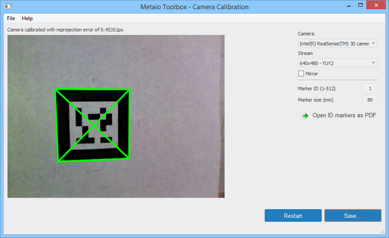

|
The Metaio Toolbox allows the developer to generate .slam and .xml files for use in the object tracker sample. The toolbox is located at $(RSSDK_DIR)/contrib/Metaio/MetaioTrackerToolbox/MetaioTrackerToolbox.exe.
The toolbox has 3 options: 3D Map Creation, Edge Tracking, and Camera Calibration:
| • | Select the 3D Map Creation mode to train a new .slam 3D tracking file, as shown in Figure 146. |
| a. | Select 640x480 – YUY2 as the stream. |
| b. | Set the sensitivity value based on the size of the object to be tracked. |
| c. | Check the Set Region of Interest option. |
| d. | Check the Auto Adjust Region of Interest option. |
| e. | Click the Start button. |
| f. | Move the camera (or the object) around until Features Recorded (top left) is at the desired amount. |
| g. | Save the recorded 3D map. |
Give about 20 seconds for the initialization process. If features (red dots) do not appear, reset.
Figure 146: Metaio Toolbox 3D Map Creation Tool
| • | Select the Edge Tracking mode to load in a CAD .obj file for creating a new .xml 3D tracking file, as illustrated in Figure 147. |
| a. | Select an .obj file for tracking (sample obj files are under Assets/3DTargets) |
| b. | Choose the initial viewpoint sets that the object will track at. |
| d. | Choose the level of detail value for the right level of values. |
| e. | Click Accept. The .xml 3D tracking file will be saved. |
Figure 147: Metaio Toolbox .xml creation tool
Camera Calibration
| 1. | Select the Camera Calibration mode. |
| 2. | Select 640x480–YUY2 as the stream. |
| 3. | Prepare the camera calibration markers (available under $(RSSDK_DIR)/contrib/Metaio/MetaioTrackerToolbox/calibration) and set the corresponding marker ID. |
| 4. | Click Start and wait until completion as shown in Figure 148. |

Figure 148: Metaio Toolbox camera calibration tool
|